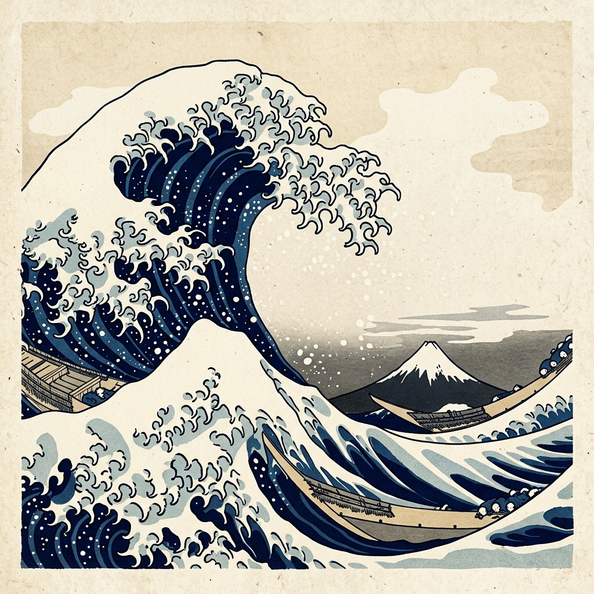

Oceans & Coastlines

The Surrounding Seas
Japan is entirely surrounded by water. To the east and south lies the vast Pacific Ocean, while the west is bordered by the Sea of Japan (East Sea), separating the archipelago from the Asian mainland.
This insular geography has defined Japan's historical isolation as well as its modern reliance on maritime trade. Japan has one of the longest coastlines in the world, stretching over 29,000 kilometers, deeply indented with natural harbors, bays, and inlets.
The convergence of ocean currents around these islands creates some of the most dynamic and productive marine environments on the planet.
Marine Geography & Economy
The Kuroshio Current
Also known as the "Black Current," this strong western boundary current brings warm tropical water from the south along Japan's eastern coast. It significantly warms the climate of southern Japan and sustains rich coral reefs and diverse marine life.
The Oyashio Current
Flowing down from the north, this cold, nutrient-rich subarctic current meets the warm Kuroshio current off the eastern coast of Japan. The convergence zone creates exceptionally rich fishing grounds, fundamental to the Japanese diet and fishing economy.
Ports & Trade Routes
Due to the lack of extensive natural resources on land, Japan relies heavily on international maritime trade. Major coastal cities like Yokohama, Kobe, and Osaka developed around massive natural ports, functioning as the vital economic lifelines of the nation.